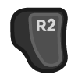

Installation¶
Background¶
There’s a lot to learn/know around the topic of installing non-Steam games on the Deck, and I won’t begin to try to cover it all here. But I can go over some things specific to Myth.
Most importantly, you do need to own Myth 2 so that you can get a copy of the necessary game data. Myth 2 is unfortunately not on any digital games store these days but CDs can still be found.
You will also be using the Linux patch for Myth 2 from Project Magma. As I’ll describe below, likely you will just be running a script that automatically fetches this file for you, and you don’t have to worry about specifics. But it’s also acceptable to manually download and use a specific version of the patch if you need to. FYI I originally designed and tested this configuration using the 1.8.3 patch, and I’ve used 1.8.4 too. Anything 1.8.3 or later should hopefully be fine.
A quick digression here. Given that we’re going to need to use the Project Magma patch, which comes with an installer program, why can’t we just run that installer program? There’s a couple of main reasons:
The installer wants you to point it at either an existing Myth 2 installation to update, or a mounted Myth 2 CD, neither of which you are likely to have handy for your Deck.
The installer requires a code library (libgtk) that is not natively present on the Deck, and which would be a hassle to install correctly.
So we’ll just be yanking the necessary files out of the patch/installer and putting them where they need to go.
You can do the Myth 2 installation work directly on the Deck itself. Or, you can do it on some other Linux system, and then transfer all the Myth 2 files to the Deck when you’re done.
In either case you will need to know how to transfer files to the Deck and how to run shell commands on the Deck. I very strongly recommend against trying to do the procedure below using the Deck’s onscreen virtual keyboard! If you want to do the entire procedure on the Deck, you should have some other means of entering commands. You can connect a keyboard directly to the Deck, or use other methods (personally I run an ssh server on my Deck so that I can log in remotely to type commands from another computer).
Necessary Files¶
As mentioned above, you will need the game data for Myth 2, which comes in the form of five “tags” files with these names:
international large install
large install
medium install
international small install
small install
If you already have an existing Myth 2 installation somewhere (or can create one), you can find these in the “tags” folder where the game is installed. Depending on what kind of Myth 2 CD you have you may also be able to easily find and copy them directly from the CD. In any case, you need to have these files on hand.
With these files on hand you can create a fully patched-up Myth 2 installation, either on the Deck itself or on some other Linux system. Away we go…
Game Install¶
Now you’re going to need to enter commands in a shell, working in a filesystem where you have those five “tags” files available. If you’re working on some other Linux system or logging into the Deck remotely, you already have a shell you prefer to use. If you’re just connecting a keyboard directly to the Deck, you need to put the Deck into desktop mode and you can start the Konsole app to get a shell.
There are three different ways you can do this installation:
Using the provided script and accepting all the default behaviors.
Using the provided script and modifying the defaults.
Manually doing the steps yourself.
Likely the first way will be fine, but I’ll also describe the other ways in case you need to handle some “things aren’t working” or “I need to do something differently” issues.
Scripted¶
The easiest approach is to download a script and let it run with its default behavior. Here’s the three things that the script will normally assume:
The “tags” files are in your current working directory (when you run the script).
The Project Magma patch file is the 1.8.4 patch, to be downloaded using the URL that was correct at the most recent update of this script.
The desired location for the Myth 2 installation is the
Games/Myth2subdirectory under your home directory.
If all these assumptions are good, you can run the install script without having to tweak anything. If on the other hand you think you will need to change one or more of those assumed behaviors, you should still read this section, but then continue on to the next section below to learn how to do those tweaks.
For now let’s say you’re sticking with the defaults. One of those defaults means that your “working directory” needs to be the directory that contains the “tags” files. You can use the cd command if necessary to get your working directory correct before running the script. For example if the “tags” files are all in /home/deck/Downloads and you want to make that your working directory, then you should execute this command in the shell:
cd /home/deck/Downloads
When you’re happy with your working directory, you’re ready to go. Execute the following commands in the shell. You can skip any line that begins with “#”; that’s just a comment to tell you what is going on.
(Note that the -LO argument to curl below ends with a letter O, not a zero.)
# Download the script.
curl -LO https://github.com/neogeographica/mythdeck/raw/master/install-myth2.sh
# At this point you can optionally use "cat install-myth2.sh" or a text
# editor like "nano" to examine the script; make sure it's not doing
# anything shady.
# Now run the script.
bash install-myth2.sh
# Assuming all went well, you can delete the script.
rm install-myth2.sh
Scripted but with Tweaks¶
You can change any or all of the three defaults by using “export” commands before you run the script. Note that the export commands described here must be done in the same shell window where you will then run the script.
If you need to indicate that the tags files are in some directory that is not the current working directory, you can export a value for MYTH2_TAGSDIR. For example if your tags files are all in the /tmp/tags directory then you would do this before running the script:
export MYTH2_TAGSDIR="/tmp/tags"
If you need to get the Project Magma patch from some other location – maybe the URL used by the script is broken, or maybe they’ve released a new version you want to use and the script hasn’t updated yet – then you can export a value for PM_MYTH2_INSTALLER.
One way to do this is to manually download the patch yourself and then use the path to that download as the value for PM_MYTH2_INSTALLER. For example if you’ve manually downloaded Myth2_192_Linux.tar.gz into the /home/deck/Downloads directory then you would do this before running the script:
export PM_MYTH2_INSTALLER="/home/deck/Downloads/Myth2_192_Linux.tar.gz"
Alternatively you can set PM_MYTH2_INSTALLER to the URL where the patch is hosted, if you want the script to do the download for you. For example something like this:
export PM_MYTH2_INSTALLER="https://some.website.com/stuff/Myth2_192_Linux.tar.gz"
The final thing you can tweak is the directory where Myth 2 should be installed. This can be changed by exporting a value for MYTH2_INSTALLDIR. For example if you want it to be installed to /home/deck/M2 then you would do this before running the script:
export MYTH2_INSTALLDIR="/home/deck/M2"
Once you’ve done the exports for your tweaks, you can download and run the script as described in the previous section.
Manually¶
Perhaps there’s some reason you can’t use the script at all – e.g. maybe you need to change some particular behavior that’s not one of the three tweakable defaults. In that case you can do the work yourself with a series of shell commands.
If the script isn’t working for you, these commands might not work either, but at least you can see “under the hood” and perhaps change what you need to. Obviously you could also look at the script itself to see what it’s doing, but the core sequence of necessary commands is simpler.
Since hopefully nooooobody will need this, I’ve put those commands in a separate file. Have a look if you really must.
Sanity Check¶
At this point, you might want to test that the game actually works!
Note that if you were logging into the Deck remotely to do the above work, at this point you do need to switch over to the Deck in desktop mode and run a Konsole shell there.
The program you want to run is Myth2_64bit inside your Myth 2 install directory. So if you installed Myth 2 into /home/deck/Games/Myth2, you would execute this:
/home/deck/Games/Myth2/Myth2_64bit
Myth 2 should start up and run correctly. Once you get to the main menu, go ahead and quit out of it for now.
Other Addons¶
To take advantage of community work on Myth 2 you may want to add a few other modifications. The Tain is one good place to get Myth stuff. FYI my Myth 2 installation always includes:
And also, support for playing the entire Myth:TFL campaign and multiplayer in the Myth 2 engine:
Installing Myth addons is generally just a matter of extracting files into the right location as per their READMEs. In these cases, the end result will be:
For the two “Cutscenes” patches: a bunch of “.mov” files that go into a
cutscenessubdirectory in your Myth 2 installation. Create that subdirectory if it’s not there, usingmkdir cutsceneswhile working in your Myth 2 directory.For the other three downloads: three large files that go into the
pluginssubdirectory.
Adding to Steam¶
Once you have your complete working Myth 2 installation in some location on the Deck’s filesystem, you can add it to Steam as a shortcut to a non-Steam game. If you’re not familiar with that process, here’s a quick rundown:
In desktop mode on the Deck, open Steam and click the “Games” menu on the top of the window.
Choose “Add a Non-Steam Game to My Library”.
In the resulting dialog, click “Browse”, and change the “File type” at the bottom of the file chooser to “All Files”.
Navigate to find and select the “Myth2_64bit” file in your Myth installation.
Once you have double-clicked on that (or selected it and clicked “Open”), the final step is to click “ADD SELECTED PROGRAMS”.
Renaming¶
Regardless of whether you are already an expert at adding non-Steam games, pay attention to this next step. You need to use a specific name for this game. Otherwise the MythDeck configuration won’t be available.
If you search around in your Steam games library you should see an entry for “Myth2_64bit”. Select that, click on the little “gear” symbol to manage the game, and click on “Properties”. In the resulting dialog you must change the name of this shortcut. Instead of “Myth2_64bit” you must use the name “Myth II: Soulblighter”. It really does need to be exactly that, with the space after the colon and everything. I had to pick some name to associate the config with, so I decided I might as well use the official one.
At this point you could also add custom library art for the game but that’s a topic outside of what I can cover here. Basically, Myth 2 is now installed and ready to configure!
Selecting MythDeck¶
Switch your Steam Deck back to gaming mode (where hopefully we can now remain). Find “Myth II: Soulblighter” in your library and select it.
Select the little controller icon to manage your input settings, then go to the top of that page and choose to “Browse Community Layouts”. This will take you to a window that shows both “TEMPLATES” and “COMMUNITY LAYOUTS”; move right or hit the right bumper to switch to showing the community layouts. Hopefully you can find and select the MythDeck configuration there!
Among other things, the MythDeck config provides mouse support:
to move the cursor.
 or click to do a mouseclick.
You can use that to navigate the game menus during initial configuration.